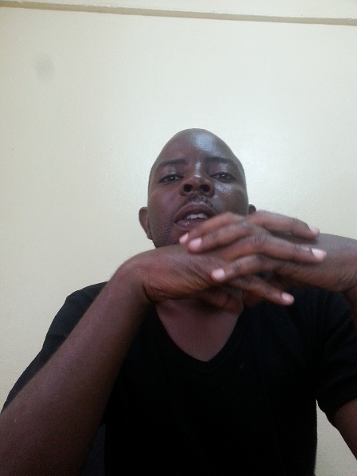

Abraham Luutu | WDD 130

Hello! My name is Abraham Luutu and I am pursuing a Bachelor's degree in Software Engineering at BYU-Idaho. I enjoy learning programming, problem solving, and creating digital solutions. My studies are helping me build skills in coding, system design, and modern software development practices to prepare me for a career in technology. Beyond academics, I value continuous learning and personal growth. Technology changes rapidly, and I believe it is important to stay curious and adaptable in order to succeed in the software engineering field. I enjoy exploring new tools, frameworks, and modern development practices that help me become a better programmer and problem solver. I also appreciate opportunities to work on projects that allow me to apply what I have learned in practical situations. These experiences help me gain confidence, creativity, and teamwork skills that are important in professional environments In addition to my passion for software engineering, I also enjoy learning about innovation and how technology can transform communities and organizations.